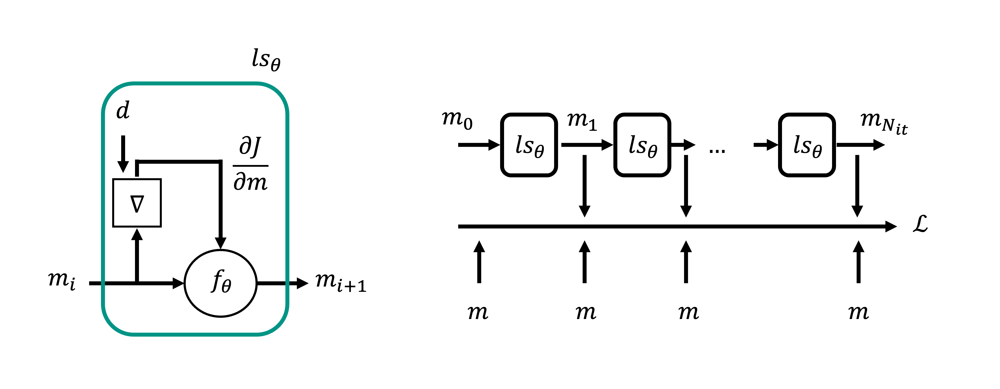
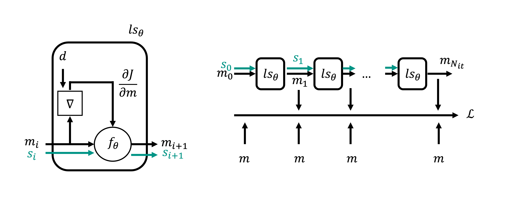

Deep learning for Inverse Problems#
The field of inverse problem has experienced a renaissance in the last decade thanks to the recent advances in Deep Learning. Whilst solid theories exist for the solution of linear (or nonlinear) inverse problems, in practice one is always faced with problems that are ill-posed by nature, i.e. many solutions exist that can match data equally well. This is where for long time the inverse problem community has spent time and resources to identify mitigating strategies to reduce the so-called nullspace of an inverse problem by means of prior information. Similarly, for long time the optimization community has developed iterative solvers that can provide solutions to convex or non-convex functionals by requiring only access to function and gradient evaluations of the functional of interest. In this lecture we will discuss where and how Deep Learning may be of great help in the solution of inverse problems.
Data-driven or learned regularization of inverse problems#
To begin, let’s consider the solution of an inverse problem of the form:
\(\mathbf{d}^{obs}=g(\mathbf{m})\)
or
\(\mathbf{d}^{obs} = \mathbf{Gm}\)
where \(g\) or \(\mathbf{G}\) is the known modelling operator, \(\mathbf{m}\) are the unknown model parameters, and \(\mathbf{d}^{obs}\) are the observed data. As previously mentioned, in many (geo)scientific applications the operator may be ill-posed and prior knowledge is required to obtain a plausible solution (not just one of the many that matches the data). In classical inverse problem theory this can be achieved as follows:
Regularization: \(J = ||\mathbf{d}^{obs}-g(\mathbf{m})||_p^p + \lambda ||r(\mathbf{m})||_p^p\) where \(r\) is a function that tries to penalize some features of the model that we are not interested in. Classical choices of \(r\) are linear operators such as the identity matrix (this type of regularization is called Tikhonov regularization and favours solution with small L2 norm - \(p=2\)) or the second derivative of laplacian operator (this type of regularization favour smooth solutions). Alternatively, one could choose a linear or nonlinear projection that transforms the model into a domain where the solution is sparse; by choosing \(p=1\), one can estimate the sparsest model that at the same time matches the data.
Preconditioning: \(J = ||\mathbf{d}^{obs}-g(p(\mathbf{z}))||_p^p + \lambda ||\mathbf{z}||_p^p\) where by performing a change of variable (\(\mathbf{m}=p(\mathbf{z})\)) the inverse problem is now solved in a transformed domain, and \(p\) is a function that filters the solution \(\mathbf{z}\) in such a way that favourable features of the model are enhanced. As an example, a smoothing operator can be used to produce smooth solution (note how this differs from the previous approach where smooth solutions could be constructed by penalizing roughness in the solution by means of second derivatives).
A common feature of these two families of approaches is that we as user are requested to select the regularizer or preconditioner for the problem at hand. This could be a difficult task and usually requires a lot of trial-and-error before a good choice is made for a specific problem. Alternatively, one could define a projection that reduces the dimensionality of the space in which we wish to find the solution (i.e., \(\mathbf{x} \in \mathbb{R}^{N_x}, \mathbf{z} \in \mathbb{R}^{N_z}\) with \(N_z << N_x\)). This approach reminds us of the dimensionality reduction techniques discusses in this lecture and the choice of the method used to identify a representative latent space can be arbitrary (i.e., a simple linear transformation like PCA or a complex nonlinear transformation like that induced by an Autoencoder or a GAN). A clear advantage of such an approach is that the user is not required to define a transform upfront. Provided availability of training dataset in the form of a representative set of solutions \(M = (\mathbf{m}^{<1>}, \mathbf{m}^{<2>}, ..., \mathbf{m}^{<N>})\), the best data-driven transformation can be identified that suits the problem at hand.
Before we get more into the details of such an approach, it is important to make a few remarks. This approach lies in between classical approaches in inverse problem theory and supervised learning approaches in that:
classical inverse problems: only the modelling operator \(g/\mathbf{G}\) and one instance of data \(\mathbf{d}^{obs}\) are available. Prior information comes from our knowledge of the expected solution (or its probability distribution), but no set of solutions are available when solving the problem;
supervised learning: pairs of models and associated observations \((\mathbf{m}^{<i>}, \mathbf{d}^{obs,<i>})\) are available upfront (or a set of models \((\mathbf{m}^{<i>}\) from which the associated observations can be synthetically created via the modelling operator). A data-driven model (e.g., a NN) is then trained to find the mapping between data and models. Note that the modelling operator is not actively used in the training process;
learned regularization: a set of models \((\mathbf{m}^{<i>}\) is available upfront, which are used to find a latent representation. The inverse problem is subsequently solved for one instance of data \(\mathbf{d}^{obs}\) using the learned regularizer (or preconditioner) and the physical modelling operator.
The key idea of solving inverse problems with learned regularizers is therefore to split the problem into two subsequent tasks, where the first is concerned with the prior and the latter with the modelling operator (this is different from the supervised learning approach where the two are learned together):
Learning process: a nonlinear model is trained to identify a representative latent space for the set of available solutions. Such model can be an AE (or VAE) network:
\[ \underset{\mathbf{e}_\theta, \mathbf{d}_\phi} {\mathrm{argmin}} \; \frac{1}{N_s}\sum_i \mathscr{L}(\mathbf{m}^{(i)}, d_\phi(e_\theta(\mathbf{m}^{(i)}))) \]or a GAN network
\[ arg \; \underset{g_\theta} {\mathrm{min}} \; \underset{d_\phi} {\mathrm{max}} \; \frac{1}{N_s}\sum_i \mathscr{L}_{adv}(\mathbf{m}^{(i)}) \]Inversion: Once the training process is finalized, the decoder (or generator) is used as a nonlinear preconditioner to the solution of the inverse problem as follows:
\[ AE: \mathbf{m} = d_\phi(\mathbf{z}) = p(\mathbf{z}) \quad GAN: \mathbf{m} = g_\theta(\mathbf{z}) = p(\mathbf{z}) \]such that the inverse problem becomes:
\[ J = ||\mathbf{d}^{obs}-g(p(\mathbf{z}))||_p^p + \lambda ||\mathbf{z}||_p^p \]This problem can be now solved using a nonlinear solver of choice, where the gradient can be easily computed using the same set of tools that we employed in the training process of neural networks, namely backpropagation:
\[ \frac{\partial J}{\partial \mathbf{z}} = \frac{\partial J}{\partial g} \frac{\partial g}{\partial p} \frac{\partial p}{\partial \mathbf{z}} \]where \(\partial J / \partial g\) is the derivative of the loss function over the predicted data, \(\partial g / \partial p\) is the derivative of the physical modelling operator, and \(\partial p / \partial \mathbf{z}\) is the derivative of the decoder of the pretrained AE (or that of the generator of the pretrained GAN) over the input.
Finally, it is worth noting that when an autoencoder is used to find a representative latent space, alternatively a regularized problem of this form can be solved:
where the regularization terms ensures that the autoencoder can recreate the estimated model. This ensures that the solution lies in the manifold of the set of plausible solutions used to train the AE network.
Learned solvers#
In the previous section we have discussed the solution of linear (or nonlinear) inverse problems from a high-level perspective. In fact, we purposely decided to avoid any discussion regarding the numerical aspects of solving any of the cost functions \(J\). In practice, real-life problems may target model spaces that contain millions (or even billions) of variables and the same usually applies for the observation vector. Under these conditions, iterative solvers similar to those presented here and here are therefore the only viable option.
An iterative solver can be loosely expressed as a nonlinear function \(\mathcal{F}\) of this form:
where \(\mathbf{m}_0\) is an initial guess. The vanilla gradient descent algorithm can be more explicitly described by the following update rule:
which we can unroll for a number of iterations and write as:
This expression clearly shows that the solution of an iterative solver at a given iteration is a simple weighted summation of the intermediate gradients that are subtracted from the initial guess \(\mathbf{m}_0 \). Similarly, more advanced solvers like the linear or nonlinear conjugate gradient algorithm take into account the past gradients at each iteration, however they still apply simple linear scalings to the gradients to produce the final solution.
The mathematical community has recently started to investigate a new family of iterative solvers, called learned solvers. The key idea lies in the fact that a linear combination of gradients may not be the best choice (both in terms of convergence speed and ultimate quality of the solution). An alternative update rule of this form
may represent a better choice. However, a question may arise at this point: how do we choose the nonlinear project \(f_\theta\) that we are going to apply to the gradients at each step? Learned iterative solvers, as the name implies, learn this mapping. More specifically, assuming availability of pairs of models and associated observations \((\mathbf{m}^{<i>}, \mathbf{d}^{obs,<i>})\), a supervised learning process is setup such that an iterative solver with \(N_it\) iterations is tasked to learn the mapping from data to models. Let’s take a look at the schematic below to better understand how this works:

A learned iterative solver can be seen as an unrolled neural network where each element takes as input the current model estimate and its gradient and produces an updated version of the model. To keep the model capacity low, each unit shares weights like in classical RNN and each update can be compactly written as:
where \(\oplus\) indicates concatenation over the channel axis (assuming that model and gradient are N-dimensional tensors). Depending on the problem and type of data \(f_\theta\) can be chosen to be any network architecture, from a simple FF block, to a stack of FF blocks, or even a convolutional neural network. Moreover, given that we have access to the solution, the loss function is set up as follows:
where each estimate is compared to the true model. Since early iterations may be worse, an exponentially increasing weight may be used to downweight their contributions over the estimates as later iterations of the unrolled solver. Finally, once the learning process is finalized, inference can be simply performed by evaluation a single forward pass of the network for one instance of data \(\mathbf{d}^{obs}\) and a chosen initial guess.
To conclude, it is important to answer the following question: why learned solvers are better than pure vanilla supervised learning?
The key difference between these two approaches lies in how they decide to use the knowledge of the modelling operator \(g/\mathbf{G}\). Whilst traditional supervised learning approaches may use the modelling operator in the process of generating training data whilst ignoring it during training, learned iterative solvers integrate the modelling operator in the learning process. Two benefits may arise from this choice: generalization of the trained network over unseen modelling operator and increased robustness to noise in the data.
Variants of learned solvers#
The structure of the learned solver discussed above closely resembles the method proposed by Adler and Öktem in 2017. A number of variants have been suggested in the literature in the following years:
Learned solver with memory
Adler and Öktem further propose to include a memory variable \(\mathbf{s}\). This takes inspiration from conventional solvers that use past gradients (or memory) to obtain more informed update directions.

The model update can be therefore written as follows:
Recurrent Inference Machines (RIMs)
RIMs closely resemble the second learned solver of Adler and Öktem. They however differ in the design on the network block and the fact that similarly to RNNs two set of parameters are used instead of one, \(f_\theta\) and \(f'_\phi\).
The model update can be therefore written as follows:
where a new variable \(\boldsymbol \eta\) has been introduced. This is the unscaled output and is connected to the model via a nonlinear activation function \(\sigma\) that is in change of defining a range of allowed values: \(\mathbf{z} = \sigma ( \boldsymbol \eta)\).